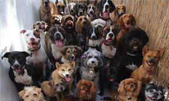
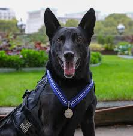

Where to get a dog and reminder of age
To take care of a dog takes hard work,especially if you get a puppy.But puppies will be with you longer so it is an advantage but there are some disadvantages.But I will show how to take care of a dog so it won't be naughty. P.S. it will be better if you get your dog from a breeder or shelter because most like if its a store it will have come from a puppy mill and the breeder can give you a blanket or something so the dog has his mothers scent.

How to treat your dog when you first get it
First of all when you first get your dog,lets them smell your house.But if there are some rooms you dont want your dog to go in keep the door closed or block the entrance.After the dog smells your house it might feel a bit anxious,especially if it is a puppy.So when it gets scared it might pee in your house or bite stuff.It isn't being bad, it's scared, so try to play with the dog and don't invite people over,the dog will get more scared.

Dog whisperer show
Unsafe food for dogs
Some food you shouldn't feed to dogs are chocolate,grapes,onions,garlic,dairy(you can feed your dog dairy but most are lactose intolarant),avocado,cherries,and much more,but do your research before feeding a dog something just because I did not list that food down. Also you can feed dogs watermelon just take out ALL seeds.
 Is that Boo?!!!!
Is that Boo?!!!! This Chihuahua would be named Tiny!
This Chihuahua would be named Tiny! AWWWWW a puppy poodle!!!
AWWWWW a puppy poodle!!!{kind=link}
{kind=link}
{kind=link}